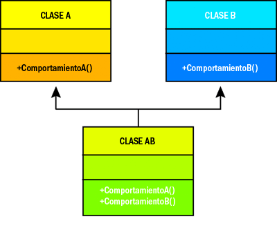
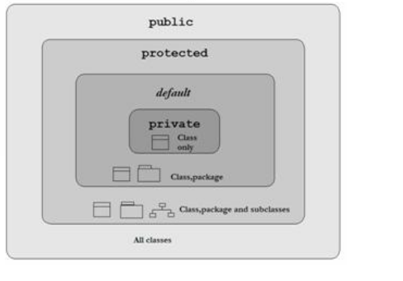
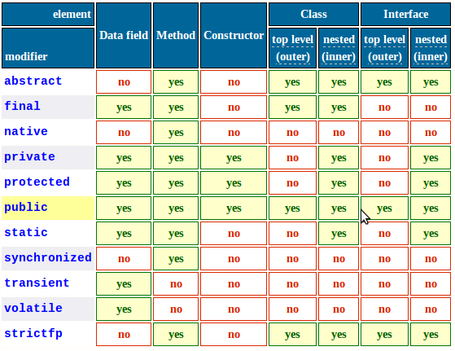
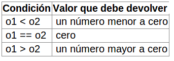

Patrones
Introducción
-
“Diseñar software orientado a objetos es difícil pero diseñar software orientado a objetos reutilizable es más difícil todavía. Diseños generales y flexibles son muy difíciles de encontrar la primera vez”
-
¿Qué conoce un programador experto que desconoce uno inexperto?
Reutilizar soluciones que funcionaron en el pasado: Aprovechar la experiencia.
Definición
-
Definición(Alexander, arquitecto/urbanista) : Cada patrón describe un problema que ocurre una y otra vez en nuestro entorno y describe también el núcleo de la solución al problema, de forma que puede utilizarse un millón de veces sin tener que hacer dos veces lo mismo.
-
Definición (Gamma): Un patrón de diseño es una descripción de clases y objetos comunicándose entre sí adaptada para resolver un problema de diseño general en un contexto particular.
Patrones
¿A qué ayudan los patrones?
-
Los patrones permiten capturar la experiencia, tratando de aplicar alguna solución aplicada en el pasado exitosamente.
-
Busca ayudar a la comunidad de desarrolladores de software a resolver problemas comunes, creando un cuerpo literario de base, osea tener un lenguaje común para comunicar ideas y experiencia acerca de los problemas y sus soluciones.
-
El uso de patrones ayuda a obtener un software de calidad (reutilización y extensibilidad).
-
La clave para la reutilización es anticiparse a los nuevos requisitos y cambios, de modo que los sistemas evolucionen de forma adecuada.
-
Cada patrón permite que algunos aspectos de la estructura del sistema puedan cambiar de forma independiente a otros aspecto.
- Facilitan reuso interno, extensibilidad y mantenimiento.
Conceptos fundamentales
-
Clase
Definiciones de las propiedades y comportamiento de un tipo de objeto concreto.
La instanciación es la lectura de estas definiciones y la creación de un objeto a partir de ellas.
-
Objeto
Entidad provista de un conjunto de propiedades o atributos (datos) y de comportamiento o funcionalidad (métodos), los mismos que consecuentemente reaccionan a eventos.
Se corresponden con los objetos reales del mundo que nos rodea, o con objetos internos del sistema (del programa).
Es una instancia a una clase.
-
Propiedad o atributo
Contenedor de un tipo de datos asociados a un objeto (o a una clase de objetos), que hace los datos visibles desde fuera del objeto y esto se define como sus características predeterminadas, y cuyo valor puede ser alterado por la ejecución de algún método.
Conceptos fundamentales
-
Método
Algoritmo asociado a un objeto (o a una clase de objetos), cuya ejecución se desencadena tras la recepción de un "mensaje". Desde el punto de vista del comportamiento, es lo que el objeto puede hacer. Un método puede producir un cambio en las propiedades del objeto, o la generación de un "evento" con un nuevo mensaje para otro objeto del sistema.
-
Identidad
La identidad es la propiedad que permite a un objeto diferenciarse de otros. Generalmente esta propiedad es tal, que da nombre al objeto.
En programación la identidad de los objetos sirve para comparar si dos objetos son iguales o no. No es raro encontrar que en muchos lenguajes de programación la identidad de un objeto esté determinada por la dirección de memoria de la computadora en la que se encuentra el objeto, pero este comportamiento puede ser variado redefiniendo la identidad del objeto a otra propiedad.
-
Mensaje
Una comunicación dirigida a un objeto, que le ordena que ejecute uno de sus métodos con ciertos parámetros asociados al evento que lo generó.
Conceptos fundamentales
-
Comportamiento
Una comunicación dirigida a un objeto, que le ordena que ejecute uno de sus métodos con ciertos parámetros asociados al evento que lo generó.
-
Estado
El comportamiento de un objeto está directamente relacionado con su funcionalidad y determina las operaciones que este puede realizar o a las que puede responder ante mensajes enviados por otros objetos. La funcionalidad de un objeto está determinada, primariamente, por su responsabilidad. Una de las ventajas fundamentales de la POO es la reusabilidad del código; un objeto es más fácil de reutilizarse en tanto su responsabilidad sea mejor definida y más concreta.
Conceptos fundamentales
Relaciones
Es posible crear objetos de diferentes clases y establecer una relación entre ellos. Cuando los objetos son relacionados es posible acceder a los miembros de un objeto desde otro objeto.
Esto supone una ventaja cuando un objeto debe comenzar el procesamiento de información justo en donde otro objeto habría terminado el procesamiento.
Adicionalmente nos permite pasar información de un objeto a otro y de ahí a otro objeto de forma encadenada.
Formas de realizar la relación entre objetos:
Asociacion
-
hacer una referencia de una clase dentro de otra.
Al menos un atributo de la clase B es una referencia a la clase A.
-
No es una relación fuerte, es decir, el tiempo de vida de un objeto no depende del otro, es decir La creación de B no implica la creación de A.
Es una relación duradera
-
Es una relación duradera
Conceptos fundamentales
Relaciones
Asociacion
-
Normalmente la conexión entre los objetos se realiza recibiendo la referencia de uno de ellos en el constructor u otro método.
-
Si la relación tiene cardinalidad superior a uno hay que usar un array o una estructura de datos dinámica.
-
La clase B usa a la clase A.
-
La asociación se podría definir como el momento en que dos objetos se unen para trabajar juntos y así, alcanzar una meta.
-
Customer es independiente de CreditCard, puesto que el cliente puede existir sin necesidad de tener asignada una tarjeta de crédito.
-
la creación de creditCard se hace afuera de la clase, puede seguir existiendo la creditCard, sin que exista el cliente.
Conceptos fundamentales
Relaciones
Dependencia o Instanciación (uso)
-
Un objeto usa (conoce) a otro cuando puede enviarle mensajes, por ejemplo, para requerir de éste algún servicio.
-
La clase B necesita de un objeto de la clase A para llevar a caba una funcionalidad.
-
En un método de b se crea un objeto auxiliar de A o en un método de B aparece A como argumento.
-
La durabilidad es temporal.
Conceptos fundamentales
Relaciones
Composición
-
La composición es una relación más fuerte que en asociación, y consiste en que la composición también controla los ciclos de vida de los objetos relacionados.
-
La Clase todo controla las clase parte, al crear el objeto se crean las partes y al finalizarlos se destruyen todas las partes.
-
Es una relación muy duradera.
-
No hay una implementación especial para este tipo de relaciones, se tratan como asociaciones ordinarias, exepto que el hecho de ser creadas las relaciones al momento de la creacion del objeto que contiene a los otros.
En java el que se encarga de la destrucción de los objetos es el garbaje collector.
-
Relación de composición entre humano y cerebro, muy duradera mientras exista el objeto compuesto existe el otro.
Conceptos fundamentales
Relaciones
Diferencia entre asociación y composición
-
La diferencia con la asociación es que en la composición hacemos en algún momento la construcción de los objetos compuestos, la creación de cerebro y corazón se hace en el constructor.
-
Los objetos que componen a la clase contenedora, deben existir desde el principio.
-
No hay momento en que la clase contenedora pueda existir sin alguno de sus objetos componentes. Por lo que la existencia de estos objetos no debe ser abiertamente manipulada desde el exterior de la clase.
-
Tanto la asociación como la composición se pueden entender con la frase “tiene un”
Conceptos fundamentales
Relaciones
Herencia
-
Los objetos heredan las propiedades y el comportamiento de todas las clases a las que pertenecen.
-
La herencia organiza y facilita el polimorfismo y el encapsulamiento, permitiendo a los objetos ser definidos y creados como tipos especializados de objetos preexistentes. Estos pueden compartir (y extender) su comportamiento sin tener que volver a implementarlo.
-
Esto suele hacerse habitualmente agrupando los objetos en clases y estas en árboles o enrejados que reflejan un comportamiento común. Cuando un objeto hereda de más de una clase se dice que hay herencia múltiple.
-
La herencia se puede entender como es “es un”

-
la clase Cuadrado "es una" figura geométrica.
Conceptos fundamentales
Delegación
-
En ocasiones, para lograr flexibilidad de diseño, un objeto es implementado de forma tal que este delegue parte de su funcionalidad en otro objeto.
-
Esto es muy común en aplicaciones que hacen uso de interfaces gráficas de usuario, en las que los controles gráficos generales delegan la acción que se ejecutará ante determinado estímulo en otro objeto.
Polimorfismo
-
Se refiere a la habilidad de objetos de distintas clases de responder al mismo mensaje.
-
Esto se puede conseguir a través de la herencia: un objeto de una clase derivada es al mismo tiempo un objeto de la clase padre, de forma que allí donde se requiere un objeto de la clase padre también se puede utilizar uno de la clase hija.
Conceptos fundamentales
Polimorfismo
-
Upcasting: un atributo que es declarado como uno de una clase padre dentro de una jerarquía de clases va a responder a todos los métodos del padre aunque no se sepa que tipo concreto va a instanciar.
-
Aca si bien es una asignación polimórfica se esta decidiendo en tiempo de compilación
-
Se decide en tiempo de ejecución cual es la clase hija que va a ser instanciar.
No se si figura geométrica va a ser un Triángulo o un Cuadrado hasta que no ejecute el programa.
Conceptos fundamentales
Polimorfismo
-
Downcasting: un atributo está declarado como una clase padre dentro de una jerarquía pero le específico que hijo esta instanciado.
Nos movemos en sentido descendente en una jerarquía y en java se especifica el tipo entre paréntesis.
-
Una vez hecho el casteo se puede acceder a los métodos o atributos propios de la clase hija.
Conceptos fundamentales
Polimorfismo
-
En ocasiones también se utiliza el término polimorfismo para referirse a la sobrecarga de métodos, término que se define como la capacidad del lenguaje de determinar qué método ejecutar de entre varios métodos con igual nombre según el tipo o número de los parámetros que se le pasa.
-
Los métodos se llaman exactamente igual pero se va a ejecutar el código de acuerdo a la clase del objeto que use al momento de la invocación.
Conceptos fundamentales
Polimorfismo
-
Aclaración: En Python no existe sobrecarga de métodos (el último método sobre escribiría la implementación de los anteriores).
-
Python, al ser de tipado dinámico no impone restricciones a los tipos que se le pueden pasar a una función, por ejemplo, más allá de que el objeto se comporte como se espera: si se va a llamar a un método f del objeto pasado como parámetro, por ejemplo, evidentemente el objeto tendrá que contar con ese método. Por ese motivo, a diferencia de lenguajes de tipado estático como Java o C++, el polimorfismo en Python no es de gran importancia.
Características del lenguaje java
-
Fuertemente Tipado
-
Herencia simple
-
Recolector de basura
-
No es puro orientado a objetos
-
Interpretado y compilado a la vez
Tipado estático
-
Fuertemente Tipado o Tipado estático Se dice de un lenguaje de programación que usa un tipado estático cuando el chequeo de tipificación se realiza durante el tiempo de compilación, opuesto al de ejecución.
Ejemplos de lenguajes que usan tipado estático son C, C++, Java.
Comparado con el tipado dinámico, el estático permite que los errores de programación sean detectados antes, y que la ejecución del programa sea más eficiente.
-
Tipado dinámico: Se dice de un lenguaje de programación que usa un tipado dinámico cuando el chequeo de tipificación se realiza durante el tiempo de ejecución, opuesto al de compilación.
Ejemplos de lenguajes que usan tipado dinámico son Perl, Python y Lisp.
Comparado con el tipado estático, o sistema de enlazado temprano, el tipado dinámico es más flexible, a pesar de ejecutarse más lentamente y más propensos a contener errores de programación.
Herencia simple
Herencia simple: una clase sólo puede heredar comportamientos y características de una sola superclase, es decir clase puede tener un solo padre.
Herencia simple
-
Herencia multiple: la herencia múltiple en contraste una clase puede heredar comportamientos y características de más de una superclase.

Recolección de basura
-
El espacio de memoria se va llenando con diferentes "objetos" , también pueden destruirse algunos de ellos, dejando "huecos" en el espacio de memoria.
Cuando ya no queda espacio disponible, o cuando lo decide la rutina de recolección de basura, la memoria es "compactada", colocando todos los "objetos" que se están usando al principio, y consolidando todos los "huecos" de memoria al final, quedando así una gran área de memoria disponible para la futura creación de objetos.
-
ventajas y desventajas
-
El programador no puede cometer errores y queda liberado de la tediosa tarea de gestionar la memoria.
-
La memoria permanece retenida durante más tiempo del estrictamente necesario.
-
El recolector de basura tarda cierto tiempo en hacer su tarea y produce pausas que pueden hacer la técnica incompatible con sistemas de tiempo real
No es puro orientado a objetos
Hay 7 características que tiene que satisfacer un lenguaje de programación para ser orientado a objetos puro, dos de las cuales java no cumple:
- Encapsulación/Ocultamiento de datos
- Herencia
- Polimorfismo
- Abstraction
- Todos los tipos predefinidos son objetos
- Todas las operaciones se efectuan mandando mesaje a objetos
- Todos los tipos definidos por el usuario son objetos.
En java no todos los tipos predefinidos son objetos ni todas las operaciones se efectuan mandando mensajes a objetos
No es puro orientado a objetos
Tipos Primitivos de datos
No es puro orientado a objetos
Tipos Primitivos de datos
-
Los nombres de tipos primitivos y envoltorio se parecen mucho. En realidad, excepto entre int e Integer y char y Character, la diferencia se limita a que en un caso la inicial es minúscula (por ejemplo double) y en el otro es mayúscula (Double).
Esa similitud puede confundirnos inicialmente, pero hemos de tener muy claro qué es cada tipo y cuándo utilizar cada tipo.
-
Una cadena de caracteres es un objeto. El tipo String en Java nos permite crear objetos que contienen texto (palabras, frases, etc.). El texto debe ir siempre entre comillas. Muchas veces se cree erróneamente que el tipo String es un tipo primitivo por analogía con otros lenguajes donde String funciona como una variable elemental. En Java no es así.
Interpretado y compilado a la vez
-
Java es compilado, en la medida en que su código fuente se transforma en una especie de código máquina, los bytecodes, semejantes a las instrucciones de ensamblador.
-
Por otra parte, es interpretado, ya que los bytecodes se pueden ejecutar directamente sobre cualquier máquina a la cual se hayan portado el intérprete y el sistema de ejecución en tiempo real (run-time).
Modificadores de acceso en JAVA
Los modificadores de acceso, como su nombre indica, determina desde qué clases se puede acceder a un determinado elemento
- default: Si no especificamos ningún modificador de acceso se utiliza el nivel de acceso por defecto, que consiste en que el elemento puede ser accedido sólo desde las clases que pertenezcan al mismo paquete.
- public: El nivel de acceso public permite a acceder al elemento desde cualquier clase, independientemente de que esta pertenezca o no al paquete en que se encuentra el elemento.
- private: Es el modificador más restrictivo y especifica que los elementos que lo utilizan sólo pueden ser accedidos desde la clase en la que se encuentran.
Este modificador sólo puede utilizarse sobre los miembros de una clase y sobre interfaces y clases internas, no sobre clases o interfaces de primer nivel, dado que esto no tendría sentido.
- protected: El modificador de acceso protected es una combinación de los accesos que proporcionan los modificadores public y private.
Proporciona acceso público para las clases derivadas y acceso privado (prohibido) para el resto de clases.
Este modificador, como private, no tiene sentido a nivel de clases o interfaces no internas.
En otras palabras, si determinada clase Hijo hereda el comportamiento de una clase Padre, la clase Hijo tendrá acceso a todos aquellos campos/métodos definidos como protected en Padre, pero no aquellos declarados como private en Padre.
Modificadores de acceso en JAVA

Otros Modificadores en JAVA
Java tiene otros modificadores que no son de acceso para lograr otra funcionalidad.
- static: Sirve crear miembros que pertenecen a la clase, y no a una instancia de la clase.
Esto es lo que se llama variables de clase.
Esto implica, entre otras cosas, que no es necesario crear un objeto de la clase para poder acceder a estos atributos y métodos.
Este es el motivo por el cual es obligatorio que main se declare como static; de esta forma no tenemos que ofrecer un constructor vacío para la clase que contiene el método, o indicar de alguna forma a la máquina virtual cómo instanciar la clase.
Un uso del modificador static sería, por ejemplo, crear un contador de los objetos de la clase que se han creado, incrementando la variable estática en el constructor
Otros Modificadores en JAVA
Un metodo static muy importante en java es:
Es el método principal es el método que ejecuta primero cualquier programa en java.
El método es public porque es accesible a la JVM para ejecutar el programa.
Es static porque esta disponible para la ejecución sin instancia de un objeto.
Devuelve void porque no devuelve nada.
El parámetro String args[] o String[] args es usado para agregar parámetros en la línea de comandos al ejecutarlo.
Otro ejemplo podria ser un método para hacer algun calculo, se puede llamar sin que exista un objeto instanciado de la clase que lo contiene.
La instanciación sería:
Otros Modificadores en JAVA
-
abstarct: La palabra clave abstract indica que no se provee una implementación para un cierto método, sino que la implementación vendrá dada por las clases que extiendan la clase actual.
Una clase que tenga uno o más métodos abstract debe declararse como abstract a su vez.
-
final: Indica que una variable, método o clase no se va a modificar, lo cuál puede ser útil para añadir más semántica, por cuestiones de rendimiento, y para detectar errores.
- Si una variable se marca como final, no se podrá asignar un nuevo valor a la variable.
- Si una clase se marca como final, no se podrá extender la clase.
- Si es un método el que se declara como final, no se podrá sobreescribir.
-
Algo muy a tener en cuenta a la hora de utilizar este modificador es que si es un objeto lo que hemos marcado como final, esto no nos impedirá modificar el objeto en sí, sino tan sólo usar el operador de asignación para cambiar la referencia.
Este código no funciona
Este código si funciona
Modificadores en JAVA
Matiz de modificadores-elementos en JAVA

Modificadores en JAVA
Reglas
- La declaración de un método puede contener solo un modificador de acceso public, protected o private
- Las clases no pueden ser declaradas abstract y final simultáneamente.
- Los métodos abstractos no pueden ser declarados private, static, final
- Los métodos abstract y native no tienen cuerpo
- Una clase que tiene métodos abstract tiene que ser declarada abstract
interfaces y clases abstractas
Clases abstractas
- Una clase abstracta es una clase que contiene uno o más métodos abstractos
- Una clase concreta que extienda (extends) de esa clase tiene que implementar todos los métodos abstractos
- Los métodos abstractos no tienen cuerpo.
- Una clase abstracta no puede ser instanciada
interfaces y clases abstractas
Interfaces
Un interface es parecido a una clase abstracta en Java , pero con las siguientes diferencias:
- Todo método es abstracto y público sin necesidad de declararlo. Por lo tanto un interface en Java no implementa ninguno de los métodos que declara
- Las variables del interface serán las variables miembro de la clase, sólo puede definir constantes, es decir en las interfaces los atributos son implícitamente final and static
- Una clase puede implementar más de un interfaz en Java, pero sólo puede extender una clase
Es lo más parecido que tiene Java a la herencia múltiple, que de clases normales está prohibida
- Podemos declarar variables del tipo de clase del interfaz, pero para inicializarlas tendremos que hacerlo de una clase que lo implemente.
- Permite a las clases sin importar su posición dentro de la jerarquía de clases el implementar métodos comunes
- Permite revelar la funcionalidad de un objeto sin revelar su implementación.
interfaces y clases abstractas
Interfaces
- Permite revelar la funcionalidad de un objeto sin revelar su implementación.
- La implementación puede cambiar sin afectar a usuario de la interface
- Ejemplo de interface
- Se puede acceder así a los atributos
- Como los atributos son final static implicitamente lo que implica que sean constantes, no se puede hacer esto:
interfaces y clases abstractas
Interfaces
- Ejemplo de clase que implemente la interfaz FiguraGeometrica
- Tiene que implementar los dos métodos de la interface FiguraGeometrica getArea() y getNombre(), la interface no tiene métodos concretos
interfaces y clases abstractas
Comparación entre clases abstractas e interfaces
- Todos los metodos de una interface son abstractos mientras que en la clase abstracta puede tener métodoss concretos (con implementacion).
- Un interface se implementa (implements) no se extiende (extends) por sus subclases.
- Una interfaz sólo puede definir constantes y la clase abstracta puede tener atributos, es decir en las interfaces los atributos son implícitamente final and static.
- Las interfaces no tiene relación directa con la herencia.
- Ni las clases abstractas ni, las interfaces pueden ser instanciadas.
- Si una clase abstrata no tiene metodos concretos (sin el modificador abstract) y no tiene atributos o los atributos son final static son iguales.
interfaces y clases abstractas
Comparación entre clases abstractas e interfaces
- Todos los metodos de una interface son abstractos mientras que en la clase abstracta puede tener métodoss concretos (con implementacion).
- Un interface se implementa (implements) no se extiende (extends) por sus subclases.
- Una interfaz sólo puede definir constantes y la clase abstracta puede tener atributos, es decir en las interfaces los atributos son implícitamente final and static.
- Las interfaces no tiene relación directa con la herencia.
- Ni las clases abstractas ni, las interfaces pueden ser instanciadas.
- Si una clase abstrata no tiene metodos concretos (sin el modificador abstract) y no tiene atributos o los atributos son final static son iguales.
Coleciones
Una colección se refiere a un grupo de múltiples elementos guardados juntos para una tarea específica.
El framework de colecciones en JAVA esta definido por un conjunto de interfaces, implementaciones de clases concretas para la mayoría de las interfaces (en el sentido general de la palabra interfaces) y un conjunto estándar de algoritmos y métodos.
Adicionalmente el framework implementaciones abstractas, que estan designadas para hacer facil la creacion de nuevas y diferentes implementaciones que permitan el manejo de colecciones de datos.
Interfaces de las colecciones del núcleo
Las interfaces del núcleo definen la funcionalidad común y permiten ser manipuladas independientemente de la implementación
- Collection
- List
- Set
- QueueSortedSet
- NavigableSet
- Map
- SortedMap
- NavigableMap
Coleciones
De acuerdo a las características las listas se pueden dividir en:
- List: lista de Objetos (clases que implementan List).
- Sets: Objetos únicos (classes that implement Set).
- Maps: Objetos con un id único (classes that implement Map).
- Queues: Objetos organizados en el orden en que se van a procesasr.
Coleciones
List Interface
La interface List se ocupa de índices y permite duplicados. Se usa para manejar el orden de elementos o objetos en una colección.
Las 3 implementaciones de List son:
ArrayList: es una lista que crece dinámicamente. Da rápida iteración y rápido acceso aleatorio. Es una colección ordenada por índice. Elegir ArrayList sobre LinkedList cuando se quiere acceso rápido y no se va a hacer inserciones y supresiones constantemente.
Coleciones
List Interface
Vector: un vector es básicamente lo mismo que un ArrayList, pero los métodos son synchronized para la seguridad de los hilios. Generalmente se usa arrayList sobre Vector porque los métodos synchronized tienen peor performance.
Vector puede contener objetos pero no datos primitivos
Coleciones
List Interface
LinkedList: es una lista ordenada por índice al igual que el arraylist, excepto que los elementos están doblemente enlazados entre ellos. Que estén enlazados da metodos extras a los de la interface List para agregar y remover elementos del principio o del final, lo que hace más fácil implementar una cola o una pila.
Hay que tener en cuenta que LinkedList itera más lento que ArrayList, pero es una buena opción cuando queremos rápida inserción y borrado.
Coleciones
Set Interface
Los Set se ocupan de que los elementos sean únicos, no permite duplicados
HashSet: Un hashSet es un conjunto sin orden, sin posición. Usa el hashcode de un objeto insertado, entonces cuanto más eficiente el el hashCode mejor es la performance. Usar esta clase cuando se quiere una colección sin duplicados y no nos importa el orden cuando lo recorremos.
Cuando se itera un hastset el orden que se accede a los elementos es impredecible.
Coleciones
Set Interface
LinkedHashSet: Es una versión ordenada del HashSet que mantiene la doblemente enlazada con los elementos.
Usar esta clase en vez de HashSet cuando nos importa el orden de iteración.
Cuando se itera un LinkedHashSet los se accede a los elementos en el orden que fueron insertados
Coleciones
Set Interface
TreeSet: El TreeSet es una de las dos colecciones ordenadas (la otra es el TreeMap).
Garantiza que los elementos se van a acceder con el orden natural.
Para que un objeto sea comparable tiene que implementar la interface comparable.
Coleciones
Interface Map
Un Map se ocupa de los identificadores. Se mapean dos objetos, uno como clave y el otro como valor, para después obtener el elemento por medio del valor clave, también permiten obtener solo la colección de claves o de valores.
HashMap: El hashMap tiene elementos sin posición sin orden. Cuando se usa el Map no importa el orden cuando lo iteramos. Las claves del Map están basadas en el hashcode, entonces como el HashSet cuanto más eficiente sea la implementación del hashCode mejor será la performance.
Permite una clave nula y múltiples valores nulos en la colección.
Coleciones
Interface Map
Hashtable: HashTable es similar a HashMap con la diferencia que HashTable es synchronized y tiene el costo de que un solo hilo puede accederlo además, esto hace que un HashTable sea más lento para iterar.
También como en HashMap se pueden agregar los mismos o diferentes valores para una clave pero se sobreescribe y solo guarda el último.
HashMap guarda solo objetos que sobreescriben los métodos hashcode() y equals() definidos en la clase Objets, afortunadamente muchos objetos vienen con esta implementación en el core como String, Integer, etc.
Es la misma relación entre Vector y ArrayList.
HashTable no permite claves o valores nulos.
Coleciones
Interface Map
LinkedHashMap: LinkedHashMap va a iterar en el orden en que se hicieron las inserciones. Es más lento que el HashMap para agregar y remover elementos, pero las iteraciones van a ser rápidas usando LinkedHashMap.
Comparando objetos
Comparable
- Para que un objetos sea comprables tiene que implementar la interfaz comparable
- En los ejemplos anteriores las colecciones podían ordenar los elementos porque las clases String, Integer , etc, que implementan nativamente esta interfaz.
- Pero cuando el objeto que queremos comparar es por ejemplo un objeto persona que tiene varios atributos tenemos que definir uno por el que vamos a comparar, para esto tenemos que su clase debe implementar la interfaz java.lang.Comparable.
- El hecho de implementar esta interfaz nos obliga a implementar el metodo compareTo().
Definición de la interface
Comparando objetos
Comparable
Implementación de la interface
El método compare() debe devolver lo siguiente:

Comparando objetos
Comparator
- Comprator a diferencia de comparator puede cambiar el ordenamiento que le da Comparable.
- Coparator obliga a implementar el método compare (obj1, obj2) de forma que los dos objetos a comparar son pasados como parámetros y el objeto que implementa el método compare simplemente sirve de apoyo a la comparación.
- Comparator puede hacer ayudar a ordenar un objeto con un criterio distinto al especificado en el método compareTo() de comparable.
Definición de la interface
Implementación de la interface
Comparando objetos
Uso de Comparable y Comparator
Podemos usarlos en listas y arrays mediante los métodos Collections.sort y Arrays.sort.
También como claves en un mapa ordenado TreeMap o como elementos en un set ordenado TreeSet.
En el caso de Comparable los objetos tienen que implementar esta interfaz para que los ordene automáticamente.
Para el caso del Comparator debemos especificar el Comparator.
Comparación
Método equals
La comparación entre objetos Java se realiza con el operador == y el método equals().
La clase java.lang.Object define un método equals por defecto que utiliza la igualdad de referencia. Si queremos implementar la igualdad de contenidos en los objetos de nuestras clases, hay que sobreescribir este método.
Nativamente equals() compara las identidades de los objetos, osea si devuelve true es porque los dos atributos comparados referencian al mismo objeto.
Método HashCode
El método hashCode también se define en la superclase Object y devuelve un int que define la clave hash de un objeto. Debe ser compatible con equals (si equals devuelve true, hashCode debe devolver el mismo int para dos objetos).
También podemos sobreescribir el método
Otros Métodos
El operador instanceOf
El operador instanceOf se usa para hacer el downcast, osea un objeto en el que el atributo que lo referencia es de un supertipo pierde la funcionalidad específica del subtipo.
Con el operador instanceOf se puede verificar el subtipo que fue instanciado en tiempo de ejecución y hacer un casting para poder usar la funcionalidad específica del subtipo, cosa que se pierde cuando se el atributo está declarado como de una clase padre de la jerarquía.
Método HashCode
El método hashCode también se define en la superclase Object y devuelve un int que define la clave hash de un objeto. Debe ser compatible con equals (si equals devuelve true, hashCode debe devolver el mismo int para dos objetos).
También podemos sobreescribir el método
En resumen sirve para:
- Utiliza instanceof para verificar el tipo de objeto.
- Restablecer la funcionalidad total de un objeto mediante una conversión
←
→
/
#